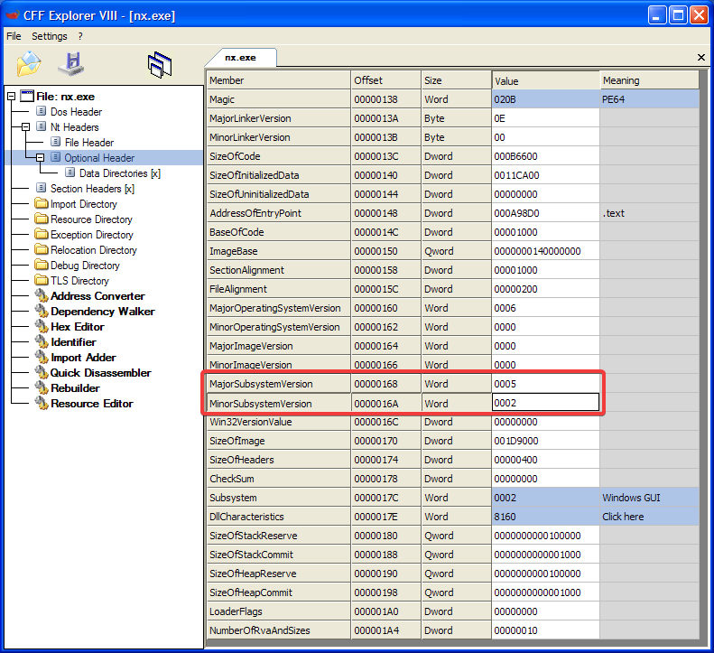
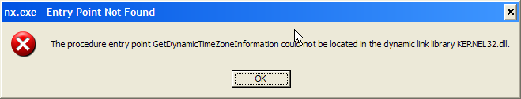
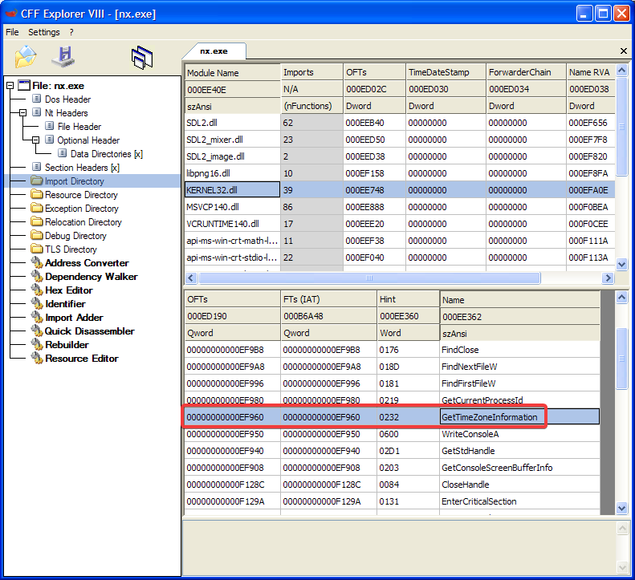
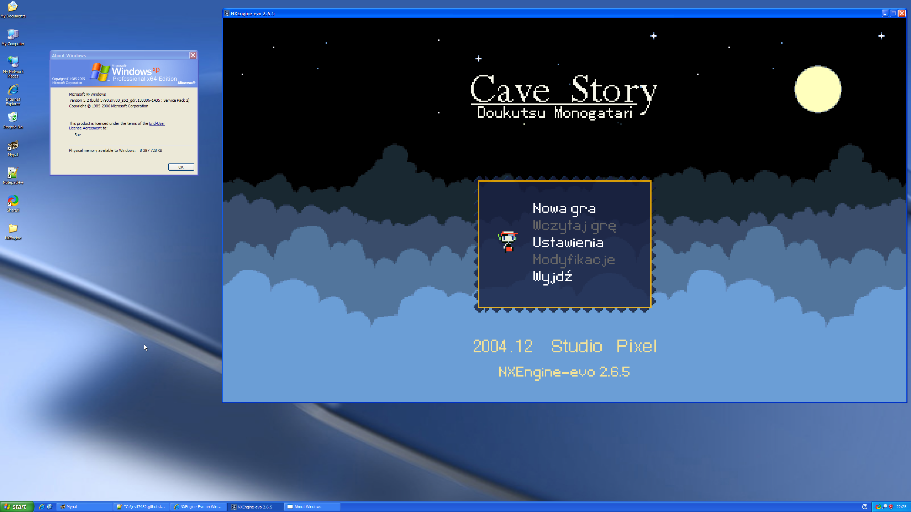

NXEngine-Evo on Windows XP x64
Running a more capable Cave Story engine on Windows XP x64After that, open nx.exe in CFF Explorer.
The first thing you have to change is the subsystem version, from 6.0 to 5.2.
To do that, go to NT Headers -> Optional Header and change the highlighted values to 5 and 2.

Now, you can't just save and run it right away, as you'll only see this error.

To fix that, you need to go to Import Directory, then find KERNEL32.dll.
After you found it, find GetDynamicTimeZoneInformation and change that to GetTimeZoneInformation.

And that's it!

Fun fact: this was written entirely on XP x64.